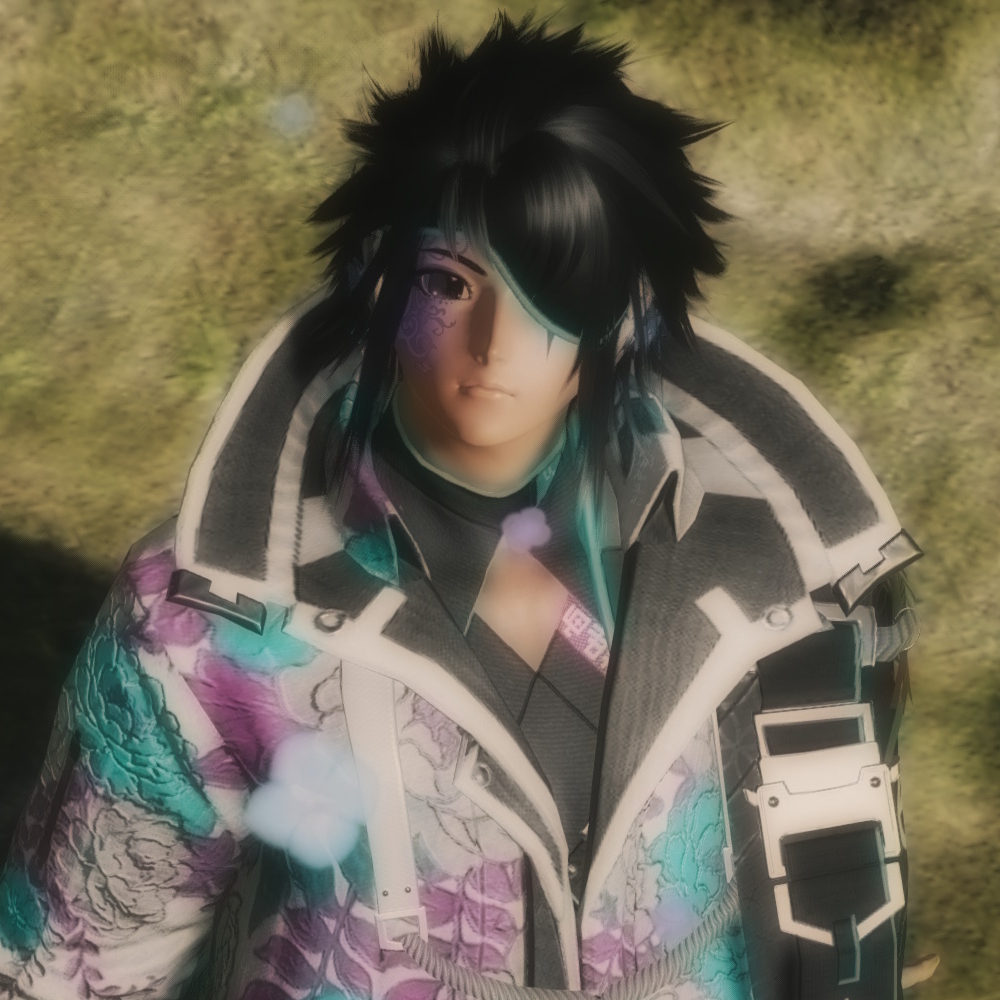

Character Page

Ryuu Jeremy
- Fullname: Kazuma Fujiwara
- Nickname(s): Ryuu Jeremy & Remy
- Species: DNA-mutated Human
- Nationality: Japanese
- Language(s): Japanese, English & Finnish
- Birthdate: 13th of April 1996
- Height: 165 cm
- Weight: 63 kg
- MBTI: ISTP-A
- Interests: Swords & Dragons
- Career: Mercenary
- Relatives: Tristan (older brother), In-Ta (younger half-brother), Mitsune (younger sister), Zero (youngest half-brother), Clarissa (youngest half-sister), Jake (son), MelLisa (niece), Iver (nephew), Freya (niece), Aneko (niece) & Aspen (niece)
- Partner(s): Yuki & Ryan
Lotsa lore here!
Discography
EPs
Daily Struggles
- Ready to Hunt - with Ryan T.
- Whispers of the Devil
- Chillin' on the Block
- Life is Rough
- Our Love
- Voiton Laulu
- Brighter Days
Singles
- Would You Be There For Me? (Cover Ver.) - rendition, original by Zanato
Soundtrack features
- Under My Spell (Prod. Zanato)
Unreleased songs
- King of the Hill - rendition, original by Iver
- Shots Fired - rendition, original by Bellamy Sharman
Gallery
Lotsa pics here!
Game origins
Phantasy Star Online 2